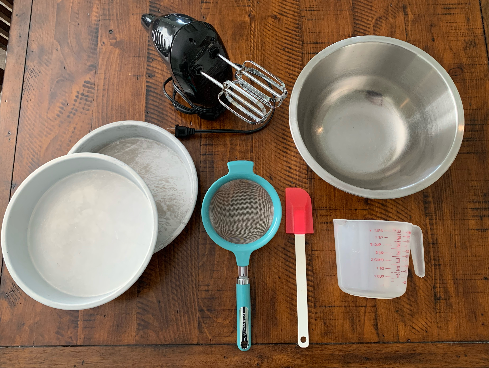
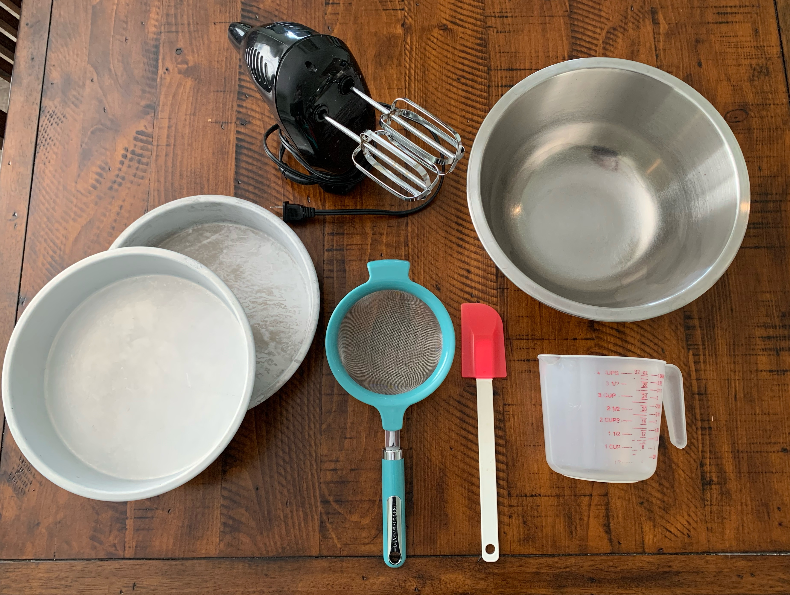

What tools do you need to bake a cake from a mix?
There are many fancy cake baking tools, but when using a cake mix, only six simple tools are needed.
Hover your mouse over the picture to learn the names of these baking tools.

There are many fancy cake baking tools, but when using a cake mix, only six simple tools are needed.
Hover your mouse over the picture to learn the names of these baking tools.
